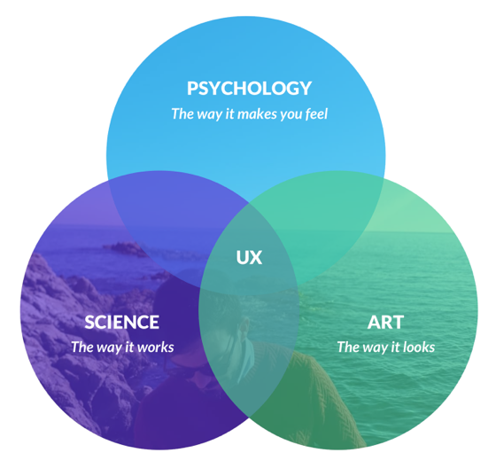
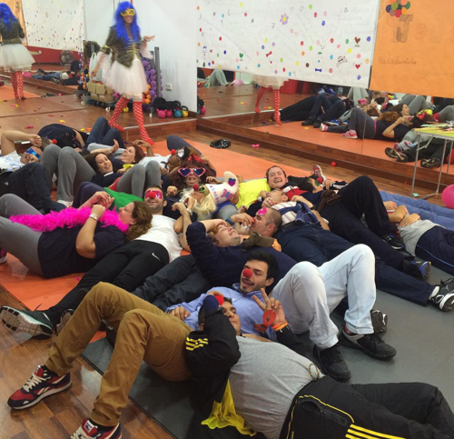
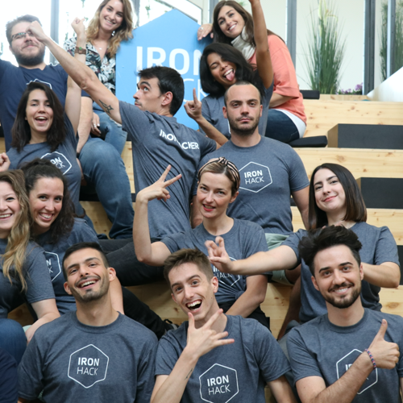
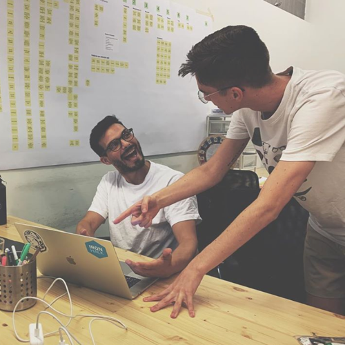
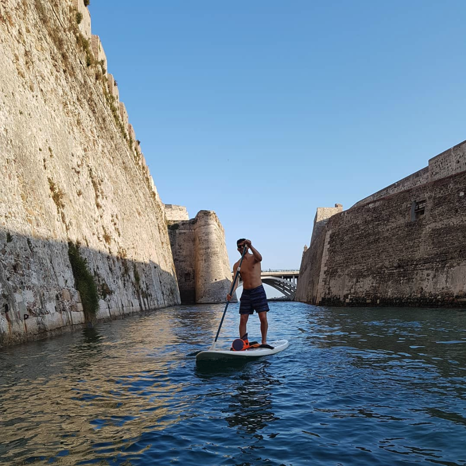

Have you ever felt that you were doing something you didn't like for living, just because it was the "right" decision?
That was me 🙋! But I founded the perfect spot where solving problems using design, technology and psychology, business focused, and make a way of living.
Moving from clinical psychology was a difficult decision, but eventhough I enjoyed my time applying pshychology and supporting people ... I was not fulfilled. At that moment I've got an opportunity in digital marketing, where I found here a whole new world and started learning a litte more of the digital world, coding and designing some canvas ; also living abroad in the UK, improving my skills.
Then I discovered UX, a field where I could use my background, solve problems, been creative and work on the tech world. So I went all the way in, I definetly got into what I wanted to do.
    